Five local engines, cloning from a short sample
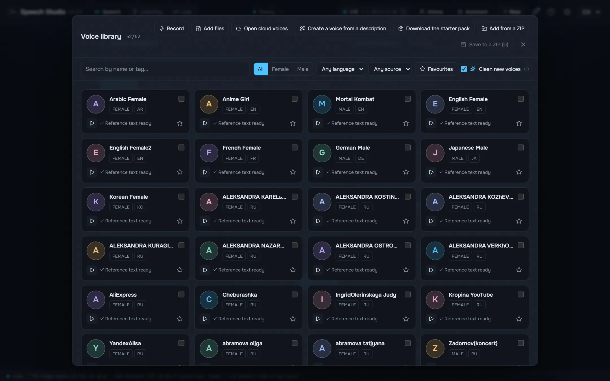
Higgs Audio v3, Fish Audio Drama 3, Supertonic 3, Qwen3-TTS and Qwen3-TTS with Russian stress run on your card.
A desktop studio that voices text with five local engines and turns recordings back into text with the speakers.
Windows 10/11 x64 and an NVIDIA card with 8 GB of video memory. Models and engines download from inside the studio, when you decide.
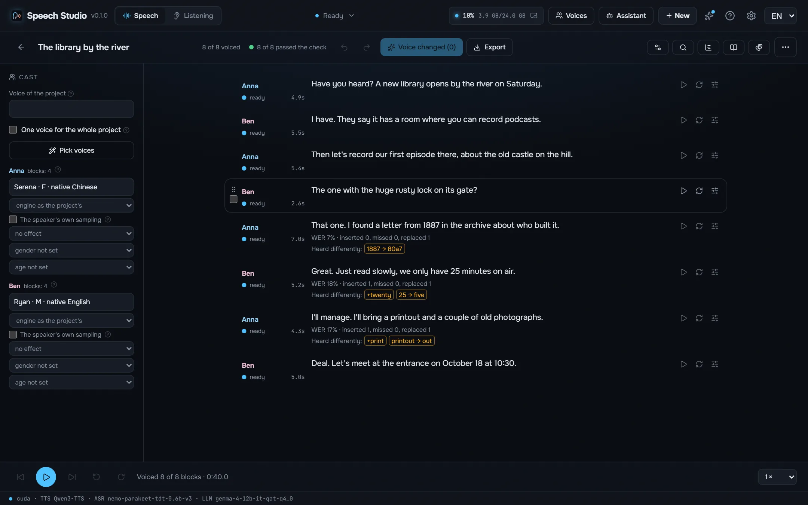
Made on this computer with the studio as it ships, every take checked by ear, exported as the studio saved it. Each engine reads the same text.
Shall I compare thee to a summer's day? Thou art more lovely and more temperate: rough winds do shake the darling buds of May, and summer's lease hath all too short a date.
Я помню чудное мгновенье — передо мной явилась ты, как мимолётное виденье, как гений чистой красоты.
Встреча 12.03 в 18:30, билет стоит 150 руб., а на улице −5 °C.
¿Qué es poesía?, dices mientras clavas en mi pupila tu pupila azul. ¿Qué es poesía? ¿Y tú me lo preguntas? Poesía… eres tú.
Il pleure dans mon cœur comme il pleut sur la ville ; quelle est cette langueur qui pénètre mon cœur ?
Amor é fogo que arde sem se ver, é ferida que dói, e não se sente; é um contentamento descontente, é dor que desatina sem doer.
床前明月光，疑是地上霜。举头望明月，低头思故乡。
Voices of known people are synthesis: a clone made from a short sample of the studio’s voice pack, not a recording of these people. The poems are in the public domain.
Supertonic 3 and Qwen3-TTS place Russian stress by guess. The studio marks it before the engine reads: RUAccent picks замо́к or за́мок, му́ки or муки́ by the sentence, and numbers, dates and units are written out in their cases.
Старинный замок стоял на холме, а дверь в него запирали на тяжёлый замок. Из этой муки пекут хлеб, но для пекаря это настоящие муки.
Мы долго стояли у берега и смотрели, как белки прыгают по веткам. В яйце много белка, а в этой задаче много лишних белков.
Measured on an RTX 4090 under Windows 11 with Speech Studio 0.2.0 as it installs: the same 17-second Russian text, the second run of each engine, its model already loaded. First sound is the time until audio starts in the window; video memory is the peak while speaking.
| Engine | For | Faster than real time | First sound | Streaming | Download | Video memory |
|---|---|---|---|---|---|---|
| Supertonic 3 | The fastest, fixed voices without cloning | 168× | 103 ms | By phrase | 0.1 GB | 1.0 GB |
| Qwen3-TTS | Fast, preset voices and cloning | 12× | 19 ms | As it speaks | 2.2 GB | 3.1 GB |
| Qwen3-TTS + ru stress LoRA | Russian with the right stresses, cloning | 10× | 26 ms | As it speaks | 2.3 GB | 3.5 GB |
| Fish Audio Drama 3 | The best acting and quality, cloning; from 6 GB of video memory | 7.0× | 326 ms | As it speaks | 21.4 GB | 21.9 GB |
| Higgs Audio v3 | Emotions and sounds by tags, cloning | 2.3× | 1.0 s | As it speaks | 5.3 GB | 18.1 GB |
Measured on the same computer with Speech Studio 0.2.1 as it installs: one 5-minute Russian recording of one speaker transcribed in Listening without telling speakers apart, the model loading included. × is how many times faster than the recording plays; video memory is the peak during the job, and the model leaves it when the job ends.
| Model | For | On the card | On the processor | Languages | Download | Video memory |
|---|---|---|---|---|---|---|
| Parakeet TDT v3 | Fast and accurate, picks the language itself | 96× | 33× | 25 | 0.7 GB | 1.2 GB |
| Parakeet Ultra | Parakeet fine-tuned by Moondream: fewer recognition errors | 73× | 33× | 25 | 0.7 GB | 1.0 GB |
| Nemotron 3.5 | The language is set, so no stray words in another one | 73× | 29× | 28 | 0.7 GB | 1.0 GB |
Each step of one turn of a conversation, measured on the same computer. The agent's own thinking is the longest step and depends on the agent and its model.
| Your phrase as text after you stop speaking (Parakeet on the card, the pause that ends a phrase included) | 641 ms – 735 ms |
| The agent writes its answer (Claude Sonnet, measured) | 2.0 s – 3.9 s |
| First sound of the answer (by engine, see above) | 19 ms – 1.0 s |

Higgs Audio v3, Fish Audio Drama 3, Supertonic 3, Qwen3-TTS and Qwen3-TTS with Russian stress run on your card.
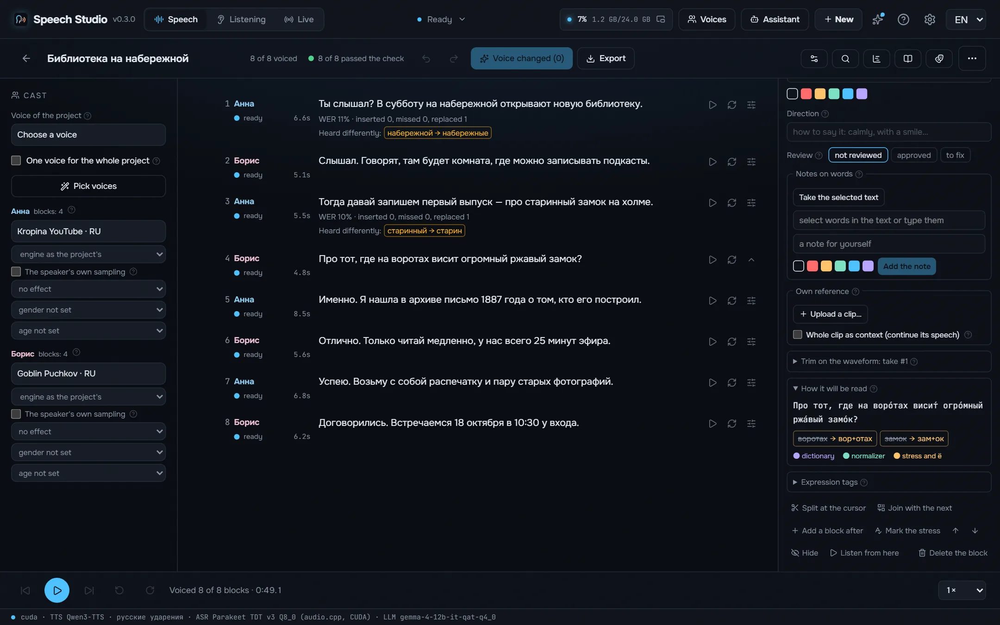
Numbers in the right case and gender, dates, times, money and units are written out before the engine reads.
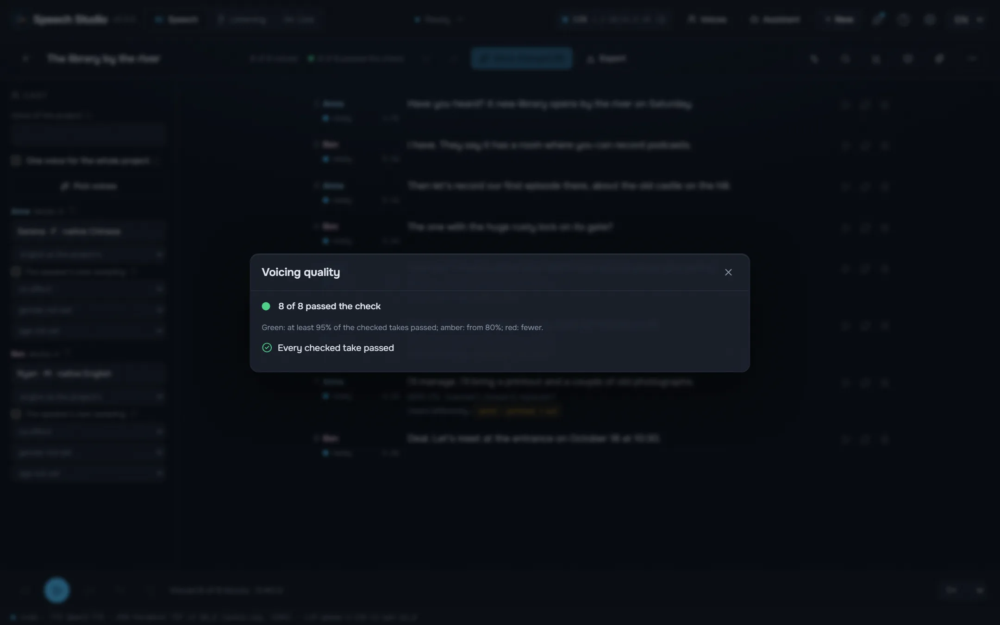
Each take is recognised back and compared with the text word by word, with checks for clipping, silence, cut-off, a click, a repeated phrase and noise instead of speech.
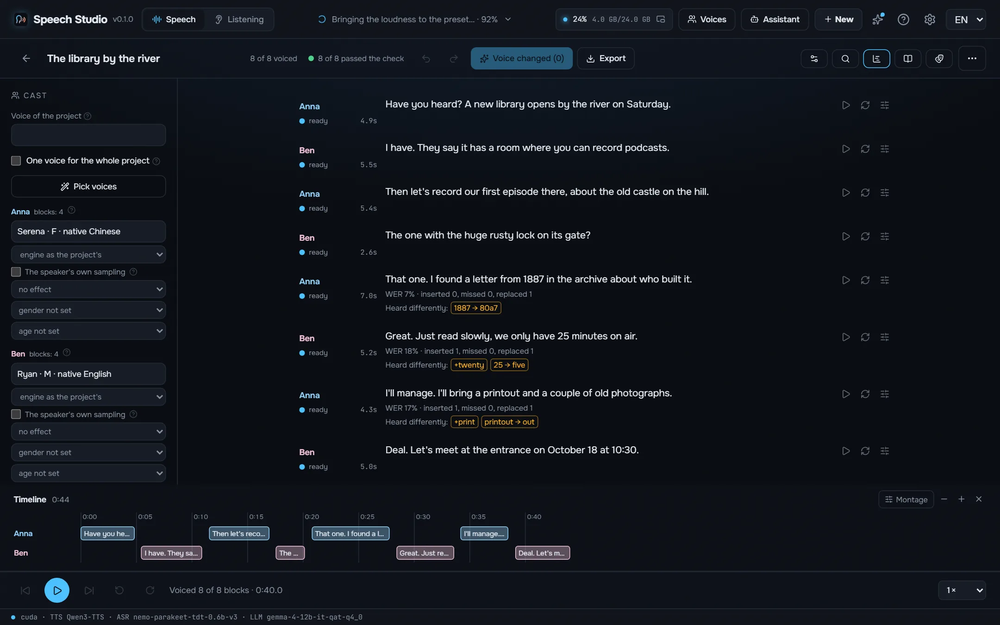
«Anna:» and «[Anna]» lines become characters with their own voices, the director writes a podcast on a topic for several speakers, and the timeline shows every overlap.
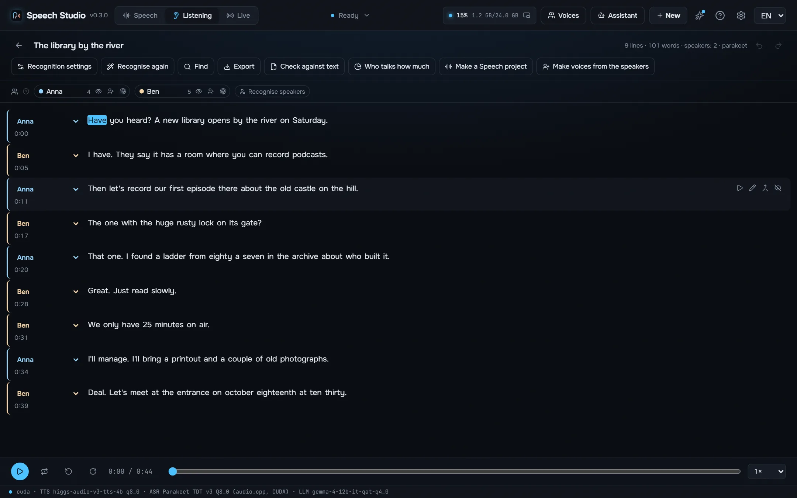
A recording, a video or a link becomes a transcript with who said what and when: Parakeet-TDT, Nemotron 3.5 or Whisper, up to eight speakers, a karaoke player, cut by text and export to SRT, VTT, ASS, TXT or JSON.
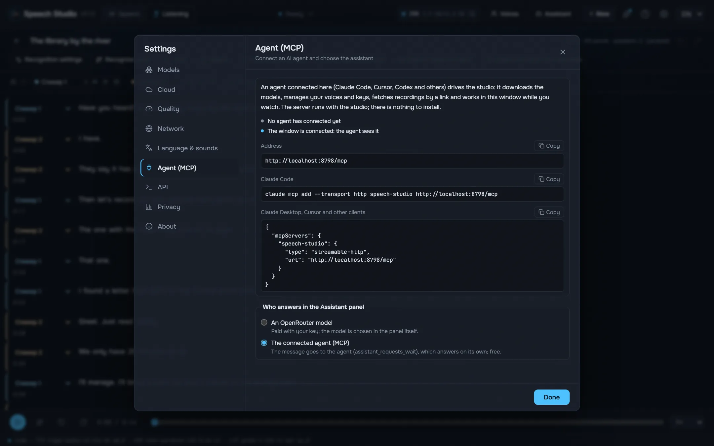
While the studio is open, an agent such as Claude Code or Cursor does everything the window does over MCP: voices a text into a file, edits projects, casts voices, transcribes and checks recordings.
The studio itself, in your language.
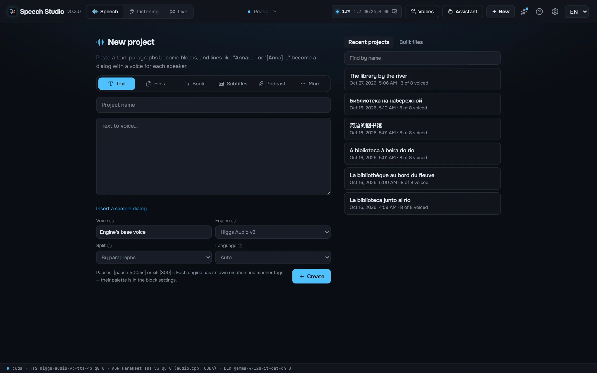
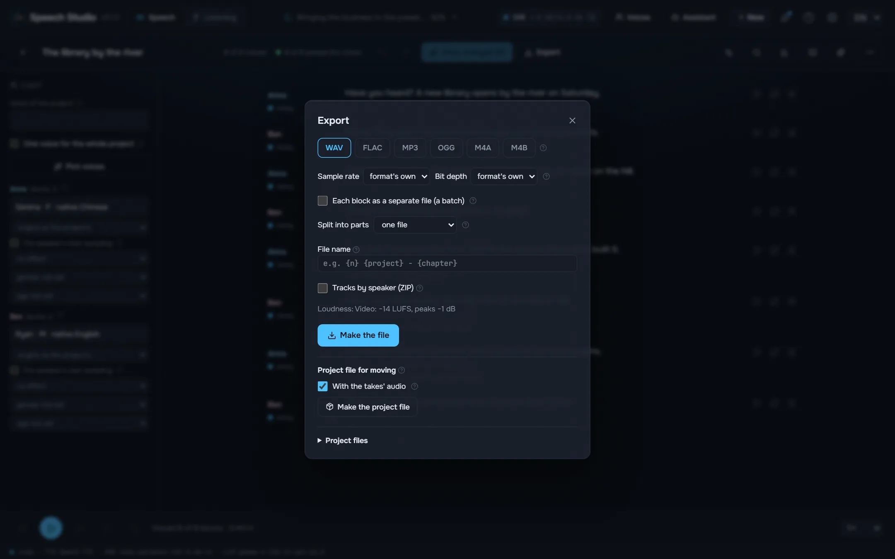
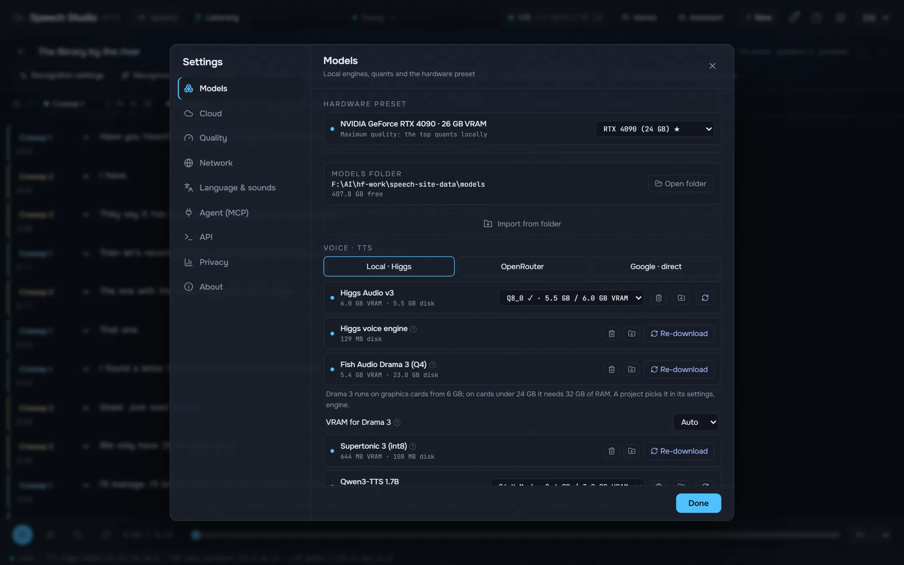
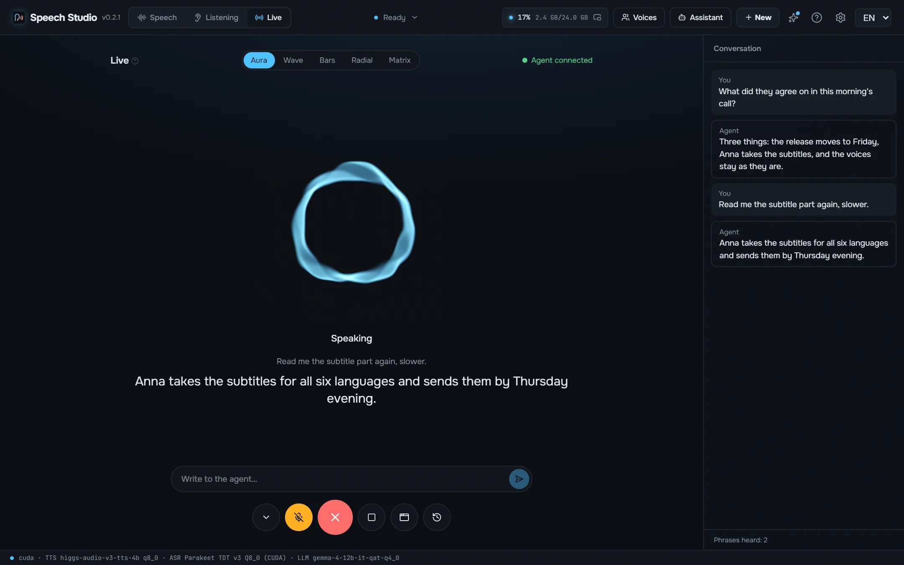
An NVIDIA card with 8 GB of video memory or more and a recent driver. Drama 3 runs whole on 24 GB; from 6 GB its experts live in RAM, which then needs 32 GB. About 9 GB of disk for the default models and engines.
Yes. The studio is free and open source, and the models download for free from inside it.
Your texts and recordings are yours, and they stay on your disk.
Numbers in the right case and gender, dates, times, money and units are written out before the engine reads. Stress, «ё» and homographs are placed by RUAccent by the sentence, doubtful ones are highlighted for you, and your own marks stay.
Supertonic 3 and Qwen3-TTS place Russian stress by guess. The studio marks it before the engine reads: RUAccent picks замо́к or за́мок, му́ки or муки́ by the sentence, and numbers, dates and units are written out in their cases.
The studio is MIT. The models are not: each keeps its own license, listed in the README. Read them before you publish or sell what you voice. README
While the studio is open, an agent such as Claude Code or Cursor does everything the window does over MCP: voices a text into a file, edits projects, casts voices, transcribes and checks recordings. Tools written for OpenAI audio work through its OpenAI-compatible API.
claude mcp add --transport http speech-studio http://127.0.0.1:8797/mcp
The service is compiled into the desktop exe and runs the engines in the same process through their C ABIs. Not a single Python process at run time.
React UI ─┐
├─ Speech Studio.exe (Tauri window + Rust/axum speech-server)
Rust axum ┘ │
├─ Higgs Audio v3, Drama 3, Qwen3-TTS (C++/CUDA, GGUF)
├─ Parakeet, Nemotron 3.5 (transcribe.cpp, GGUF)
└─ Supertonic, RUAccent (ONNX Runtime)